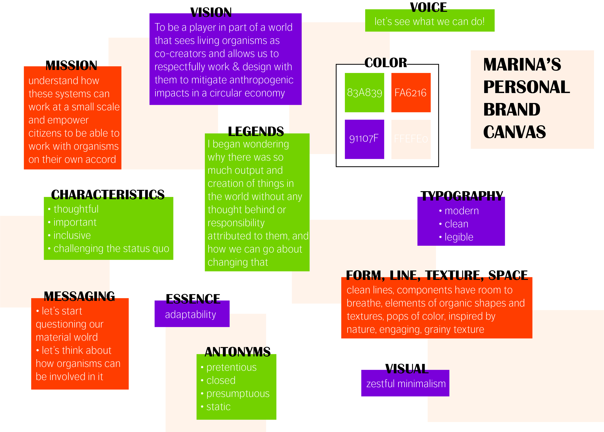
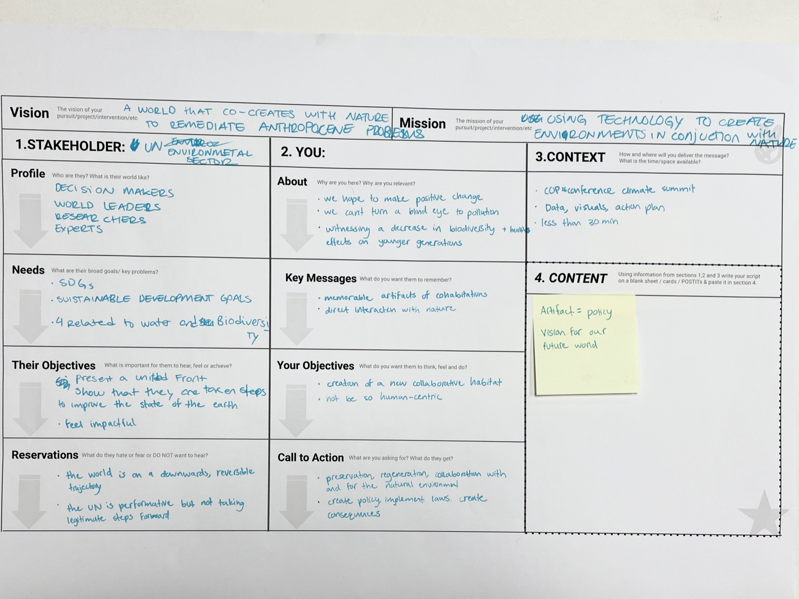
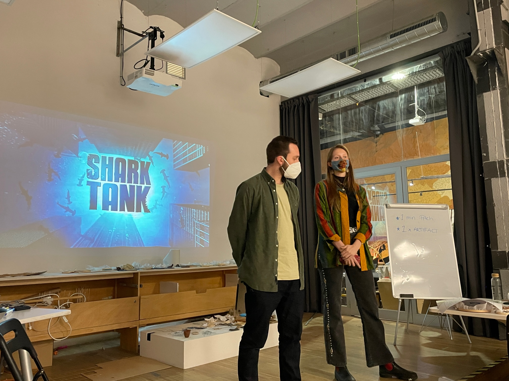

We began this course with Kate Armstrong speaking about storytelling in branding and how strong of an effect it can have. We went through various examples of brands and how their storytelling behind the brand really shapes what we think of the brand itself and how those messages are received and create a perception of attributes tied to the brand. This is not always for the best, and as Kate says, “we are being gaslit by companies all the time”. Thinking about my brand identity was a difficult task for me. I do know who I am, and what values I hold, but translating that into a visual and written form is much harder. I want my brand to be honest, authentic, and meaningful to me, yet I also know that it is not fixed as it will continue to change as I evolve.
In the follow up session a few weeks later, we did a workshop which would help further develop our projects. The day felt like a rapid fire session, which I appreciated, instead of just listening to a lecture. In groups, mine which included Paula and Pippa, we had 10-minute and 30-minute bursts to fill out a sheet with our project identity including vision, mission, information about the stakeholder and ourselves, along with context and content. Our group worked well together as we quickly threw out our ideas, and then collectively decided what would work best for a final statement. The 10 minute periods were actually really short, so we had to think fast in order to power through the exercise. Once complete, we had presentations to our stakeholders in a shark-tank like setup. Paula, Pippa and I’s speech was as follows:
Hello MDEF members of the UN environmental program here at the environmental assembly, we are a group which holds the vision that co-creates with nature to remediate anthropogenic problems. We intend to do this using technology to create environments in conjunction with nature. In line with your SDGs, we believe that together, we yield the power to make a positive change in interaction with nature that enables sustainable cities, partnership with our living systems, and unity between species. We advocate for creating new paradigms of co-creation with the planet that benefits the health of the natural environment and humankind. With this, we propose implementation of this environmental policy which we present to you today.
We presented an infographic based on data as our artifact, which we felt was in line with our stakeholders and vision. Listening to the other groups present as well was interesting because their storytelling and approach differed based on their project and stakeholders, which was part of the point of the exercise. Didac made a fair point in that the exercise was a bit hard to do due to the unclear nature of our projects at the time being. However, Kate’s response that it is better to learn the skills early on, then apply them to our projects as they develop, had a lot of validity. Although I dislike when I get the sense that people are bullshitting their way through a concept with no real substance behind it, I admit the storytelling part, when used well, is a very powerful tool. I know I need to practice this, along with my presentation skills, in order to build a strong narrative so this exercise was good practice for me. On top of all of this, our stakeholders invested with Timtams, so our pitch had a pretty sweet ending.
